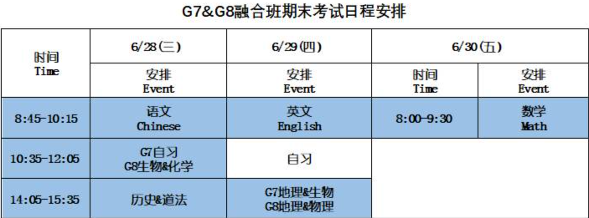

每日公报：整理来自学校校园公报的内容，整理出一个更利于班主任在早自习向学生们宣导及学生查看的内容板块。
周常内容通告
探索课：810(周三)、811(周五)。
2023年6月26日Week 21
8.2组周二（6.27）道法课请去往1308教室上课
临近期末，避免期末放假时物品过多，携带不便，请同学们利用好这几周的时间，根据自己的需求，将物品分批次带回家！
暑期将至，存放在艺文中心货架的乐器请记得暑假前取回，以免丢失。
各位同学好，23秋学期艺文护照缴交截止日期为 2024/1/3（三），暑假即将来临，希望同学们可以利用暑假时间欣赏艺文活动。附件为23秋学期艺文护照宣导及相关演出或展览讯息推荐，请仔细阅读，谢谢！
`
本学期起，视觉类、听觉/表演艺术类需各完成一场才可获得10分（满分），只完成一个领域鉴赏，只得5分。
6/15（四）8.3、8.11组生物课请去往1210教室上课，8.1、8.8组生物课请去往1209教室上课
第九届学生联合委员会正、副会长报名工作已经完成。 参选组别为编号1：9P谢宛臻（会长竞选）和9I白浩正（副会长竞选）。 依据《昆山康桥学校中学部学生会组织章程（新版）》内容规定，候选人有一组参选时，须获得 50%以上得票率，方可当选成功。 以2023/6/5中学部学生总数1806为例，需取得903人以上才算当选成功。 本次投票活动将于6/19下午15:45-17:15进行，因本次只有一组参加竞选，故而政见发表采取观看视频方式， 6/19下午先由班主任老师在班播放政见发表视频，观看完毕后再依据各年级段、各班级分批次前往指定地点投票。 （具体投票规划待确定后发出）
6月份中学部学生供餐讨论会议将在6/14（周三）召开，邀约学务及各班级代表出席参加。
会议时间： 6月14日（周三）18:15-19:00
会议地点：音乐厅二楼阶梯教室
会议内容：餐厅餐食问题沟通讨论
请各班级代表学生提前收集相关餐食问题，准时参加会议。
各位同学，初中教务处期末考试安排在6/28、6/29、6/30，相关信息如下：

补考条件：公假、丧假、病假，给予补考机会；事假不予补考。
2023-2024学年第一学期周一、周二社团选课将在2023/06/01早9：00开始，截止日期为2023/06/15晚间21:00。选课SOP详见附档，请在提交成功选课单后，需检查选课单志愿顺序是否和自己所选的内容一致，若选课志愿顺序不一致，请点击课程右侧上下箭头进行顺序调整。运动类社团因场地人数限制，最终选课结果会依据系统订单先后顺序排列，人数满员后将顺延第二志愿。*选课链接(校内)
23秋学期才艺晚间一对一小课、吉他乐团和流行乐团开放报名中，想要报名的同学请与家长确认，并于6/20（二）下午5:00完成报名，以利课程安排，谢谢！*选课链接
⭐【小课课别】：
乐理、声乐、钢琴、小提琴、中提琴、大提琴、低音提琴、长笛、单簧管、双簧管、大管、萨克斯风、小号、长号、圆号、大号、古典打击乐、架子鼓、古筝、乌克丽丽、民谣吉他、古典吉他、二胡、口琴、琵琶、阮咸、中国笛、国标舞、街舞、爵士舞、现代舞、民族舞
⭐【重要提醒】：
1. 小课为学期制，每人每学期只能报一门课程。
2. 收费标准：一节课45分钟，350元/45分钟，一次性收取15节课费用，共计5,250元。学期末会根据实际上课节数，多退少补。
3. 上课时间：晚自习时间。
4. 关于请假：如需请假请于上课日前一日（24小时前）向艺文中心提出，未于前一日（24小时前）提出者，费用不予退还。请直接与艺文中心提出请假，勿请班主任或其他老师代为转达，以免信息错漏。
图书馆南侧钢构雨蓬施工，预计2/28前(不知道什么时候)完成，请师生避开此区域，谢谢！